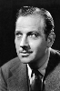
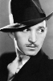

Country:United States, 64 minutes
Spoken languages:English
Genres:Horror, Thriller
Director(s):Frank R. Strayer
Writer(s):Edward T. Lowe Jr.
Video Codec:Unknown
Number: 130


Certification:
Storyline:
When the villagers of Klineschloss start dying of blood loss, the town fathers suspect a resurgence of vampirism. While police inspector Karl remains skeptical, scientist Dr. von Niemann cares for the vampire's victims one by one, and suspicion falls on simple-minded Herman Gleib because of his fondness for bats. A blood-thirsty mob hounds Gleib to his death, but the vampire attacks don't stop.
Cast:  

Medium: Original DVD,
Comments: Part of: 100 Greatest Horror Classics
Loaned: No
Aspect ratio: Unknown